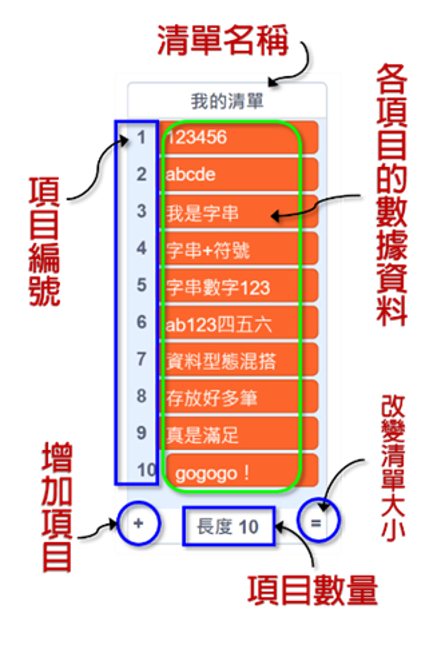

|
|
|---|
 清 單
清 單
「清單」是由許許多多的變數組成的。這些變數就像一個個房間，共同組成了一所公寓。這個公寓的名字，就是清單的名字。每一個變數都有一個唯一的門牌編號，從1一直排到最後一個。如果要訪問清單裏面的變數，找到這所公寓和具體的門牌編號就可以了。
所以，「清單」是一種可用於一次存儲多條信息的工具。你可以把它定義為包含多個其他變數的變數。它與「變數」一樣，都必須在執行前創建，可以通過點擊積木區中的《變數類》積木中的「建立一個清單」按鈕來創建清單。
「清單」中的這些項目，可以是任何數值，包括布林值（true或false）、文字、數字或符號。它們透過手動或通過編程將項目添加到清單中或從清單中刪除。而手動的方式中，也可以通過滑鼠右鍵點擊清單、選擇「匯入」或「匯出」清單，其格式是.txt 文件或逗號分隔值的.csv文件。文件中的每一行都將成為清單中的一個新項目。
「清單」中的項目就和變數一樣，你可以修改、讀取和創建它，還有一項變數沒有的功能，就是「替換」。然而，它不是那麼容易被讀取，你必須透過項目的編號數字索引而不是以名稱來引用。每一個清單可以放置高達200,000筆項目。因此「清單」的用途更為廣泛，最常使用在計算、拆解字符串和保存變數...等。
「清單」可以經由點擊變數積木面板中的方框來選擇是在舞臺上隱藏還是顯示。也可以在編程中使用積木來控制。
它與變數一樣有二種類型：全域清單和局部清單。
